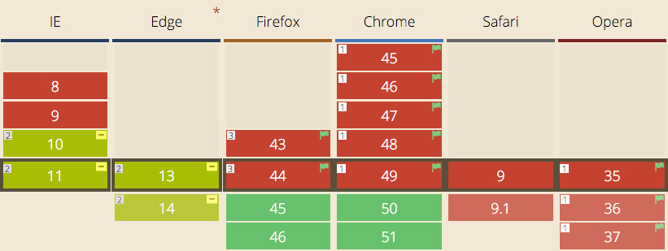

From the very beginning of CSS, there has been a giant,
layout-shaped hole at its center.

Наталия
Короткова
| Chrome | chrome://flags/#enable-experimental-web-platform-features |
|---|---|
| Opera | opera://flags/#enable-experimental-web-platform-features |
| Firefox | about:config — layout.css.grid.enabled |
From the very beginning of CSS, there has been a giant,
layout-shaped hole at its center.
<table>display: table;Следующий этап развития <table>
Элементы начинают обрабатываться как как ячейки таблицы.
floatclear или overflowdisplay: inline-block;position: absolute;display: flex;Огромное кол-во систем
построения разметки.

<div class="container">
<div class="row">
<div class="col-xs-4 col-sm-6 col-md-5
col-md-offset-2 col-lg-6 col-lg-offset-0">
...
</div>
</div>
</div>
.my-wrapper {
.make-row();
}
.my-element {
.make-lg-column(8);
}
Lost Grid
|
|
... как заставить дизайнера следовать модульной сетке?
Предложен Microsoft в 2011
.my-grid {
display: grid;
grid-template-columns: 250px 1fr 100px;
grid-template-rows: 80px 80px 80px;
}
See the Pen CSS Grid Layout by Nataliya Karatkova on CodePen.
See the Pen CSS Grid Layout - 2 by Nataliya Karatkova on CodePen.
.my-grid {
display: grid;
grid-template-columns: 250px 1fr 100px;
grid-template-rows: 80px 80px 80px;
}
.my-grid {
display: grid;
grid: 250px 1fr 100px / repeat(3, 80px);
}
fr?Доля (fraction) оставшегося пространства
See the Pen CSS Grid Layout - fraction by Nataliya Karatkova on CodePen.
.my-grid {
display: grid;
grid-template-columns: repeat(6, 1fr);
}
See the Pen CSS Grid Layout - Auto-placement by Nataliya Karatkova on CodePen.
px, rem, em, vw и т. д.%frmax-content, min-content, minmax(min, max)auto
.my-element {
grid-column-start: 3;
grid-column-end: 4;
grid-row-start: 2;
grid-row-end: 4;
}
See the Pen CSS Grid Layout - Simple by Nataliya Karatkova on CodePen.
.my-element {
grid-column-start: 3;
grid-column-end: 4;
grid-row-start: 2;
grid-row-end: span 2;
}
See the Pen CSS Grid Layout - Simple by Nataliya Karatkova on CodePen.
.my-element {
grid-column-start: -2;
grid-column-end: -1;
grid-row-start: -3;
grid-row-end: span 2;
}
See the Pen CSS Grid Layout - Simple2 by Nataliya Karatkova (@meuwka) on CodePen.
.my-element {
grid-column: -2 / -1;
grid-row: -3 / span 2;
}
See the Pen CSS Grid Layout - Simple2 by Nataliya Karatkova (@meuwka) on CodePen.
.my-element {
grid-column: -2;
grid-row: -3 / span 2;
}
See the Pen CSS Grid Layout - Simple by Nataliya Karatkova on CodePen.
.my-element {
grid-area: 2 / 3 / 4 / 4;
}
See the Pen CSS Grid Layout - Simple by Nataliya Karatkova on CodePen.
grid-column-start |
grid-column-end |
grid-row-start |
grid-row-end |
grid-column
|
grid-row
|
||
grid-area |
|||
.my-element {
grid-area: 2 / 3 / 4 / 4;
}
grid-row-start
grid-column-start
grid-row-end
grid-column-end

.my-element {
grid-area: my-name-for-this-area;
}

.header { grid-area: header; }
.main { grid-area: main; }
.footer { grid-area: footer; }
body {
display: grid;
grid-template-columns: 100%;
grid-template-rows: auto minmax(auto, 1fr) auto;
grid-template-areas: "header"
"main"
"footer";
}
See the Pen CSS Grid Layout - Layout by Nataliya Karatkova on CodePen.
See the Pen CSS Grid Layout - Layout by Nataliya Karatkova on CodePen.
@media (min-width: 768px) {
body {
display: grid;
grid-template-columns: 1fr 2fr;
grid-template-rows: 1fr auto;
grid-template-areas: "header main"
"footer main";
}
}
@media (min-width: 768px) {
body {
display: grid;
grid-template-columns: 1fr 2fr;
grid-template-rows: 1fr auto;
grid-template-areas: "header main"
"footer .";
}
}

.grid {
display: grid;
grid-template-columns: repeat(12, [col] 1fr);
grid-template-rows: repeat(4, [row] auto);
grid-row-gap: 14px;
}

<div class="grid">
<div class="element element--1">1</div>
<div class="element element--2">1</div>
...
<div class="element element--18">6</div>
<div class="element element--19">6</div>
</div>
.element--13 {
grid-column: col 1 / span 8;
grid-row: row 2;
}
See the Pen CSS Grid Layout - Named Grid Lines by Nataliya Karatkova (@meuwka) on CodePen.
.element--13 {
grid-column: col 1 / span 8;
grid-row: row 2 / span 2;
}
See the Pen CSS Grid Layout - Named Grid Lines2 by Nataliya Karatkova (@meuwka) on CodePen.
Хотим центрирование по вертикали!
See the Pen CSS Grid Layout - Alignment by Nataliya Karatkova (@meuwka) on CodePen.
align-items
justify-items
|
Автоматические
|
Задаём вручную
|
10 марта 2016
8 марта - Firefox 45
19 апреля - Chrome 50

| Chrome | chrome://flags/#enable-experimental-web-platform-features |
|---|---|
| Opera | opera://flags/#enable-experimental-web-platform-features |
| Firefox | about:config — layout.css.grid.enabled |
| IE10+, Edge | -ms имплементация отличается |
| WebKit Nightly | -webkit |
display: subgrid;
код
SUPERCSSGRID
до конца марта 2016
«Get Ready for
CSS Grid Layout»
by Rachel Andrew
Twitter: @meuwka
Facebook: Nataliya Karatkova